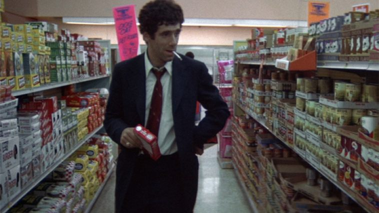

üéûÔ∏è The Long Goodbye
I rewatched The Long Goodbye recently - it's in my letterboxed top 4 - and I still love it.

Altman's style with his busy scenes and overlapping dialog is very enjoyable for me. I also saw John Sayles' Lone Star (I watched both of these as part of the Cinema Rediscovered festival) which was compared to Altman's films in Sayles' use of overlapping narratives and large casts, all who feel like they have their own lives and stories. But Sayles's film felt cinematic, whereas Altman feels rougher, almost like real life.
The "Altman zoom" - where his camera zooms in and lingers on a aspect of a scene - lingers on things I feel like my eye would linger on if I was there. Cats, people in the background, a dog dancing through the waves while a man commits suicide by walking into the sea.
Elliot Gould as Marlowe really is "the coolest loser ever portrayed on screen". This watch it really stood out to me how disconnected he is - there's no romance with the femme fatale or any interactions outside of the case. Except with his cat at the start of the film, in one of my favourite opening sequences ever. The loss of the cat and the start of the mystery really seem symbolic of Marlowe becoming unmoored.
But it doesn't seem to bother him too much - as he says repeatedly throughout the film, while lighting matches on every available surface, - "It's ok with me".
(You can see the opening sequence here on youtube, which also features Marlowe's apartment which I would kill to live in).